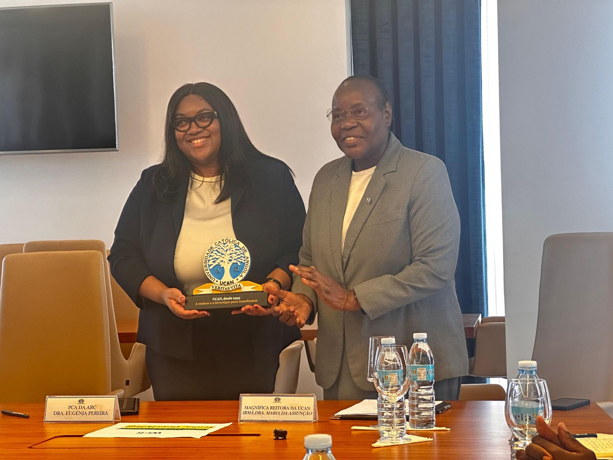

UNIVERSIDADE CATÓLICA DE ANGOLA REALIZA CERIMÓNIA DE ASSINATURA DO PROTOCOLO DE COOPERAÇÃO ENTRE ARC E UCAN
📅 30 de Abril, 2026
A Universidade Católica de Angola (UCAN) e a Autoridade Reguladora da Concorrência (ARC) formalizaram, nesta quarta-feira, 30 de abril, um importante Protocolo de Cooperação Institucional, num acto que reforça a articulação estratégica entre o sector regulador e a academia em Angola.
A cerimónia decorreu no Edifício de Extensão Universitária Michael L. Kennedy, pelas 15h00, com representantes de ambas as instituições, num momento marcado pelo compromisso com a promoção do conhecimento, investigação aplicada e desenvolvimento institucional.
A sessão teve início com palavras de boas-vindas proferidas pelo Director da Direção de Imprensa e Comunicação Social da UCAN, seguindo-se a contextualização e apresentação do protocolo pelo Doutor Pedro Kinanga, Director-adjunto do Centro de Investigação do Direito-CID, que destacou a relevância da cooperação para o fortalecimento das competências técnicas e científicas no domínio do direito da concorrência.
O momento central da cerimónia foi a assinatura formal do protocolo, acompanhada da troca de pastas e cumprimentos institucionais, simbolizando o início de uma nova fase de colaboração entre as duas entidades.
Na ocasião, a Presidente do Conselho de Administração da ARC, Eugénia Pereira, sublinhou a importância da parceria com a academia como instrumento essencial para a capacitação técnica e promoção de uma cultura de concorrência saudável.
Por sua vez, a Magnífica Reitora da UCAN, Irmã Doutora Maria da Assunção, reafirmou o compromisso da universidade com a produção de conhecimento relevante e com o estabelecimento de parcerias institucionais que contribuam para o desenvolvimento científico eficaz.
A cerimónia culminou com um brinde e momento de confraternização, seguido de fotografia de grupo, com espírito de cooperação e proximidade institucional.
Participaram, pela ARC, a Presidente do Conselho de Administração, Dra. Eugénia Pereira, as Administradoras Dra. Ana Ramalheira e Dr. Nelson Lembe, bem como o Chefe de Departamento de Estudos e Acompanhamento de Mercado (DAM), Guy Kialanda, e técnicos do Departamento de Apoio ao Conselho de Administração (DAC).
Da parte da UCAN, estiveram presentes a Magnífica Reitora, Reverenda Irmã Doutora Maria da Assunção, o Decano da Faculdade de Economia e Gestão, Doutor Alano Sicato, o Director do Centro de Investigação do Direito, Doutor João A. Francisco, o Director-adjunto do CID, Doutor Pedro Kinanga, o Vice-Decano da Faculdade de Economia e Gestão, João Victor, o Director do Gabinete da Magnífica Reitora, Doutor Osvaldo Silva e o Director da Católica Luanda Business School Dr. Francisco Quemba.
Com este protocolo, a UCAN e a ARC consolidam uma parceria orientada para o intercâmbio de conhecimento, desenvolvimento de estudos conjuntos e capacitação de quadros, para o fortalecimento das instituições e da economia angolana.